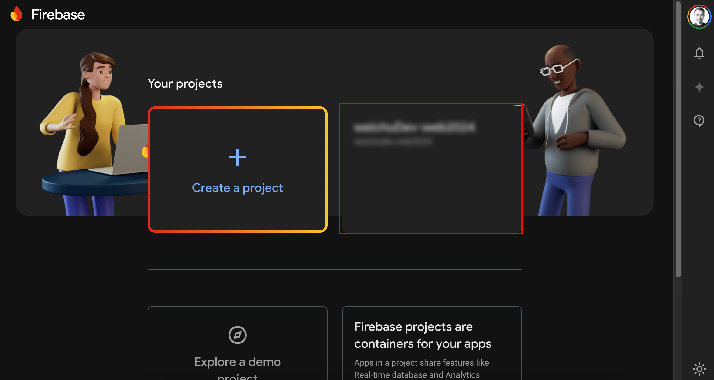
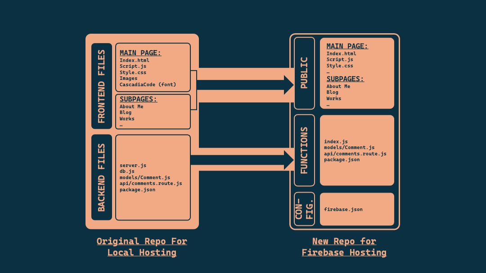

Cloud Hosting My Website with GCP Firebase Hosting and Functions
Table:
Image source: by Wei Chu
After developing my website on my local machine and testing the functions with a local server, it is time to find a cloud server that will be able to host my backend components so that data will be requested through https methods when my audiences access my website through my custom DNS.
The following is a list of backend components that be needed to complete this backend hosting:
- Server: I chose Firebase as hosting server, which is powered by GCP. The reason why I chose was mainly because of the free-tier credits ($300) given by Google, and I don't really wanna setup another email account to get the free credits from Azure or AWS .
- Application: Continuing using Node.js to handle the core logic of my website and and APIs as it relatively more lightweight and suitable for the simplicity of my web project.
- Database: Continuing using MongoDB Atlas as my database host because I like the flexible schema feature it has as a NoSQL database. NoSQL DB is quite useful when I wasn't sure about my data structure and it paves the way for scaling if the app if moving into bigger and more dynamic design. Another reason why I chose MongoDB is that it also has free tier services.
Step 01 | Setup a project on Firebase Console



💡 What it Firebase?
Firebase is a mobile and web application development platform provided by Google Cloud Platform (GCP). It offers a range of tools and services to help developers build, deploy, and scale their apps:
- Realtime database: A NoSQL database that allows for real-time data synchronization across devices.
- Authentication: Provides various authentication methods like email/password, social logins, and phone authentication.
- Cloud Storage: Securely stores and serves user-generated content like images and videos.
- Cloud Functions: Serverless functions that can be triggered by events in your app or database.
- Crashlytics: Monitor and fix app crashes and errors.
- Performance Monitoring: Track app performance and identify bottlenecks.
- Test Lab: Test your app on a wide range of devices and configurations.
Step 02 | Setup a new GitHub Repository of hosting the code
 Following-up steps after creating a new repo:
Following-up steps after creating a new repo:
- Go to VS Code and clone the newly created repo to your local machine.
- Open up a new bash terminal in the VS Code and go the major step 03 for starting setting up all you need for Firebase Hosting.
Step 03 | Set Up Firebase Hosting
Before we start doing anything, it is important to acknowledge that which kind of website we are hosting. “Is it static or dynamic? “ (Please see the call out box below.) There are clear instructions from the documents of Firebase.
Firebase Hosting can serve both static and dynamic content. For dynamic content, you can use Firebase Functions (Cloud Functions for Firebase) to handle server-side logic and generate dynamic responses.
Here I followed the instruction that is for hosting a dynamic website as my website requires HTTP request through API. The following are the setting up steps that I have gone through:
- Install Firebase CLI: If you haven't installed the Firebase CLI, do so by running:
- Initialize Firebase Hosting: Navigate to your project directory and run:
- Initialize Firebase Functions: Navigate to your project directory and run:
- Deploy Your Site: Normally deploying your site is by running the following command:
💡 Static vs. Dynamic Hosting
Firebase is a mobile and web application development platform provided by Google Cloud Platform (GCP). It offers a range of tools and services to help developers build, deploy, and scale their apps:
- Static Hosting: Serves pre-built HTML, CSS, and JavaScript files directly to the client. The content does not change unless the files are manually updated and redeployed.
- Dynamic Hosting: Involves server-side processing to generate content dynamically based on user interactions, database queries, or other server-side logic. This typically involves using server-side languages like Node.js, Python, PHP, etc.
💡 Official Firebase Hosting Document
Please refer to the document link here if you are interested in reading more about the dynamic hosting of Firebase.
Step 04 | Start Migrating frontend code and backend code to based on Firebase file structure
Image source: by Wei Chu
After the Firebase tools are configured on your machine, you will noticed roughly 3 things in your repository:
- “Public” folder - This will be the destination where all the frontend code files should be in. Therefore, the html, css and js files for the main page and subpages will be cloned from the local hosting repo to this folder.
- “Functions” folder - This will be the destination where all the backend code files should be in. The default name of the backend API connection file is “index.js” in the new repo for Firebase hosting, which is equivalent to the backend API connection file “db.js” in my local hosting repository.
- firebase.json file - The firebase.json file is the cornerstone of the Firebase Hosting project. It's a configuration file that defines how the web app, static content and dynamic functions is deployed to Firebase architecture. The file will be tailored to meet the needs of my project. It references the files placed in the Public and Functions folder.
The following shows the actual file structures of the repository for local hosting and for firbase hosting.
-
Repo for local hosting: weichudev.web.local
-
Repo for Firebase hosting: weichudev.github.io
Step 05 | Start Tailoring the hosting configuration and Backend Code
-
Tailoring the Configuration JSON file
firebase.json
-
Configuring The Dynamic Endpoint
The
index.jsfile here is the main entry point for a Node.js application that sets up and configures an Express server. It includes middleware for handling CORS, JSON body parsing, and routing. It exports the Express app as a Firebase Cloud Function named “api”.Index.js
💡 Making sure the environment variables like username and password for connecting to the MongoDB are saved in the Github Action secret as part of the deployment automation process.
-
The HTTP Request Routing File
The code is the same as the local hosting one, the
comments.route.jsfile defines the routes for handling HTTP requests related to comments in the Firebase function app. It uses Express.js to define and handle these routes. Its role is as following:- Routing: Defines endpoints for creating, updating, and deleting comments.
- Middleware: Uses Express.js middleware to handle requests and responses.
- Database Operations: Interacts with the MongoDB database to perform CRUD operations on comments.
comments.route.js
-
Database Collection Modeling
Same as the local hosting, the Comment.js file in the Models folder defines the schema including collection name, attributes and value types that will be stored in my MongoDB collection.
Comment.js
-
Dependency Configuration for Deploying the Backend Function
Comparing with the dependency for local hosting, the requirement is more specific and complex for deploy Firebase function. Here is the breakdown of the key part in the dependency code:
- These scripts in the
scriptssection are used to automate various tasks related to development, testing, and deployment of the Firebase functions. - When testing with local hosting, I found mongoose has compatible issue with the older version of Node.js, and somehow with the latest v.23 version as well. The package has no problem with v.22 in the end, therefore I specify the
Node.js engineversion here to avoid any issues of incompatibility. - Making sure all the packages that the index.js is depending on are included in the
dependenciessection. - The
devDependenciessection lists the development dependencies for the project. These packages are only needed during the development and testing phases, not in production. - The
"private": truefield indicates that the project is private and should not be published to the npm registry. This setting is primarily used to prevent accidental publication of the package.
package.json
- These scripts in the
💡 Call functions via HTTP requests
Please refer to the document link here if you are interested in reading more about how to trigger a Firebase function through an HTTP request with a request handler.
Step 06 | Setting up GitHub Action workflow for testing deployment
firebase-hosting-deploy.yml
-
The typical format of a GitHub Action Workflow starts with
onsection followed byjobssection. -
In the
onsection, the trigger behaviour will be defined. Here I simply push the commits into the main branch as there is no collaboration and sophisticated workflow to edit my web code. ( However, there is a plan to stage the development & deployment of my other project with more through approach with GitHub Action. Thus, please watch this space! ). In order to prevent the updated content of my website from directly being deployed and going live, I am create a manual triggerworkflow_dispatch. -
In the
jobssection, the task defined here focuses on the building workflow to deploy the web hosting and API function to firebase.- Checkout code: Uses the
actions/checkout@v2action to check out the repository code. - Set up Node.js: Uses the
actions/setup-node@v2action to set up Node.js version 22. - Install dependencies: Changes directory to functions and runs
npm installto install Node.js dependencies. - Install Firebase CLI: Installs the Firebase CLI globally using
npm install -g firebase-tools. - Set environment variables: Creates a
.envfile in the functions directory and sets environment variables (DB_USERNAMEandDB_PASSWORD) using secrets from the repository. - Authenticate with Firebase: Deploys the functions and hosting to Firebase using the Firebase CLI and an authentication token stored in the
FIREBASE_TOKENsecret.
- Checkout code: Uses the
Step 07 | Using my own domain

Image source: Firebase Documentation / Hosting
-
Buying my own domain
I started my DNS provider hutting by finding the top 5 providers. I discovered the following ranking of those providers according to Top10.com:
- HOSTINGER
- SCALAHOSTING
- FASTHOSTS
- IONOS
- BLUEHOST
-
Choosing IONOS
I narrowed the options down to between Hostinger and IONOS based on how many reviews that was given about these 2 providers. In the end I chose IONOS. I have to be honest, it was because it was the cheapest and most straight forward when I was trying to choose my domain. Technically, Hostinger has better service plan but the scenario is mainly based on if the DNS will be shared between multiple website and other benefits regarding scalability ( watch this video if you want to know more about the differences between IONOS' offering and Hostinger's). For my web project, it is a fairly simple project , and I just want to experiment my first project about full-stack development, I think IONOS suits my requirements for now.
- Go to IONOS main page and sign in

- Click “Add product” after you have successfully logged in.

- Search the domain that you prefer and chose the one that is not registered and matches your budget.

- Following the checking out steps and complete the DNS service purchasing.
- Go to IONOS main page and sign in
-
Add Your Custom Domain
-
Go to Firebase Console: Open the Firebase Console and select your project.

-
Navigate to Hosting: In the left-hand menu, click on "Hosting".

-
Add Custom Domain: Click on "Add custom domain" and enter your custom domain name.

-
Go to Firebase Console: Open the Firebase Console and select your project.
-
Verify Domain Ownership
- Get Verification Code: Firebase will provide you with a TXT record that you need to add to your domain's DNS settings to verify ownership.
-
Add TXT Record: Go to your domain registrar's website (IONOS in this case) and add the provided TXT record to your domain's DNS settings.
-
Go to IONOS dashboard and choose “Domains & SSL”

-
Click the 3 dots icon at the far end on the right of your domain record, and then choose “Show details”

-
Choose “Modify DNS settings ” under the list item called “Target”

-
The record of your DNS will show up. Adding in the record that firebase has requested in the verification instruction.

-
Go to IONOS dashboard and choose “Domains & SSL”
- Verify: After adding the TXT record, go back to the Firebase Console and click "Verify".
- Get A Records: Firebase will provide you with A records that you need to add to your domain's DNS settings.
-
Add A Records: Repeating the same steps for “Verifying Domain Ownership”. Go to your domain registrar's website and add the provided A records to your domain's DNS settings.

💡 Please refer to my GitHub repository to look at the full code.
troubleshoot Notes
Issue 01 | Fulfilling best practices required by eslint
Error:
- ESLint is a code analysis tool used to identify and fix problems in JavaScript code. It helps maintain code quality and consistency by enforcing coding standards and best practices. When integrated into a Firebase deployment workflow, ESLint ensures that the code being deployed is free of common errors and adheres to specified coding guidelines.
-
The following is an example of error happening to my deployment workflow when eslint discovered issues in my code. I have to say, this tool is a bit petty as it deals into a lot of nitty gritty stuffs and some of them I don't really think it is a genuine mistake.

Fix:
The code that is called out can be as trivial as the choices of quotation symbols, indentations, ect, even though it doesn't stop the code from running successfully. To correct the errors called out by eslint, the way of writing the code even will have to be fundamentally changed. Thus, I decided to just suspend those unnecessary rules for my project for now. The typical syntax is “ '(rule category)' : 0 “. ex: “key-spacing”: 0.
.eslintrc.js
Issue 02 | Error fetching comments. Please try again. ( The greatest evil of my project making me troubleshoot for days to find out what was going on.)
Error:
- After I deployed the function to the Firebase ( which links to the artefact registry on GCP ), I noticed that an error message still comes back as “error: Error fetching comments. Please try again.” every time when I loaded by website.
-
It is quite hard to directly point out what was the issue in the very beginning apart from diagnosing it with the following possible directions:
- API request's syntax isn't formatted correctly.
- The connection string to the database is not correctly defined.
- The environmental variables for connecting to the database are not parsed in successfully to the deployment workflow.
- The HTTP request is not correctly routed.
- The API endpoint definitions are in similar format for the same type of request method.
Fix ( This is more like a guideline of steps rather than a single solution.):
- Diagnosing what does it mean behind the error message.
- 400 Bad Request Error - This occurs when a server can't parse the request itself. This could be caused by an incorrect URL, something wrong with how the API request was composed, or even an issue within the application itself.
- 401 Unauthorized Error - This API error occurs when a server cannot authorize the user's credentials. This could be caused by an incorrect username or password or even a lack of permission access.
- 403 Forbidden Error - This API error occurs when a server refuses to fulfill a request from the client due to authorization issues or other restrictions put in place by the API provider.
- 500 Internal Server Error - This API error occurs when a server encounters an unexpected condition that prevents it from fulfilling the API request. This could be caused by an issue with the API provider's internal systems or there could be something wrong with how the API request was composed.
💡 To read more about different types of errors, please follow this article that was useful to me during troubleshooting to learn more.
-
Scoping through the fundamental concept of using each package and modules.
When I migrate the codes of my backend function from the project for local hosting to the project for cloud hosting with Firebase, I had to remodel a little it of the way how connection and routing happen. After checking all the syntax are correct and environmental variables are parsed through , but they still didn't solve the issue, I then suspect there is something wrong how I composed the code snippets. I decided to research a bit deeper and properly understand how does every module that I have used in this project interact with each other. ex:
- Knowing more about Express.js
- The difference between
res.send()andres.json()
-
GOING BACK TO THE BASIC! and finally … THE CODE IS CRACKED!
After trying to fix the error many times and still didn't work… This article reminds me of going back to the original design of my backend code which I ran it successfully on a local server.
-
Conclusion:
- In the end I found out that I made a mess when composing the code for request routing. I put the routing definition code file
comments.route.jsin a child-folder called “api” which works for the project with local hosting, and somehow the firbase function doesn't like it. So I moved it to the same level as the mainindex.jsfile. - I exported the wrong module at the end of
comments.route.jscode. I exported the code as “app” instead of “router”, but I imported the router from the comments.route.js code into the mainindex.jscode. - I aligned the app name exported from the index.js code with the
functionIdunderhostingsection in thefirebase.jsonconfiguration file.
- In the end I found out that I made a mess when composing the code for request routing. I put the routing definition code file